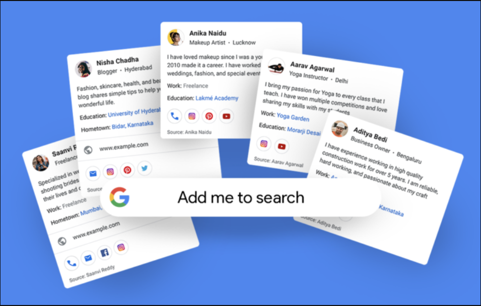
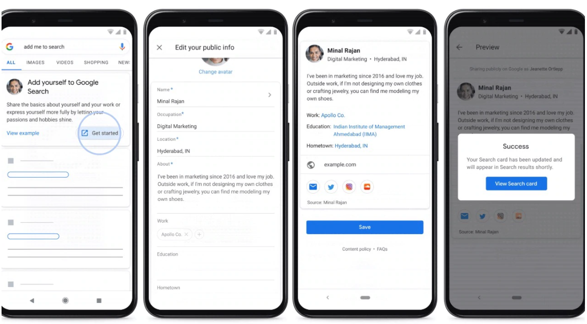
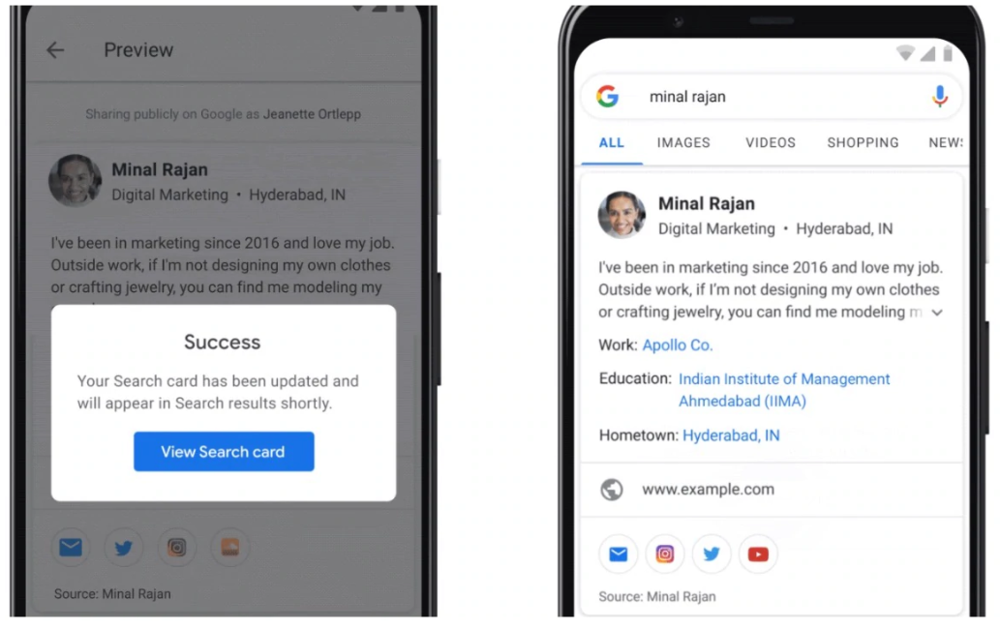

Virtual Visiting Card
Google has rolled out a new feature for India called People Cards— a Google Search feature that lets users create a virtual visiting card, highlight their existing website or social profiles.
People Cards is aimed at helping the millions of individuals, influencers, entrepreneurs, prospective employees, self-employed people, freelancers, or anyone else out there who wants to be discovered and help the world find them. Users across India can discover the people cards on their mobile phones, in English.
To ensure that reliable information is provided, Google has put together a variety of protections and controls to maintain the quality of information on people cards. The safeguards include mechanisms to protect against abusive or offensive content.
Once you click on View Search Card; all the details that you filled earlier will be shown when someone searches your name on Google.
